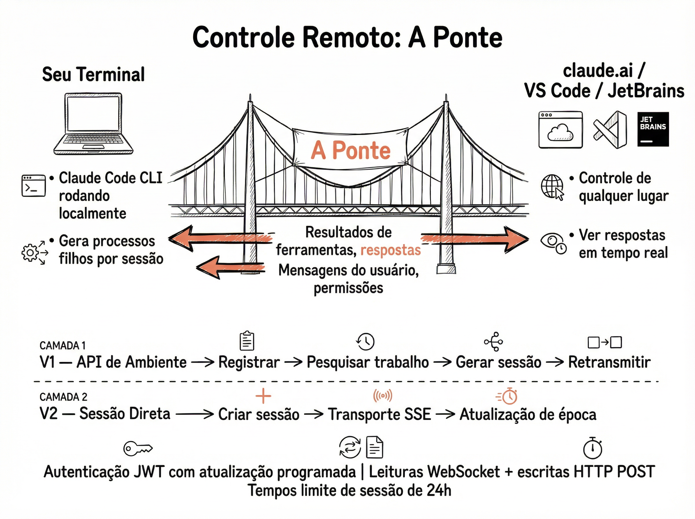

🔗 Conexão Bidirecional
Terminal e browser/IDE comunicam em tempo real. A ponte é o componente que permite ao Claude Code ser controlado remotamente — você digita no VS Code, e o terminal executa. O terminal gera resultados, e o browser exibe. Tudo em milissegundos.

O Que É a Ponte
Camada de comunicação — a ponte é o middleware que conecta o processo CLI do Claude Code a interfaces externas (browser, VS Code, JetBrains)
Bidirecional por design — dados fluem nos dois sentidos: do terminal para o browser e do browser para o terminal
Tempo real — streaming contÃnuo permite ver resultados conforme são gerados, sem esperar a resposta completa
Agnóstica de frontend — a mesma ponte serve browser, VS Code e JetBrains sem modificação
💡 Ponte na Prática
Quando você abre o Claude Code no VS Code, a extensão não roda o modelo localmente — ela se conecta via ponte ao processo CLI que já está rodando no seu terminal. Isso significa que fechar o VS Code não mata a sessão, e você pode reconectar a qualquer momento. A ponte mantém o estado mesmo quando o frontend desconecta.
📤 Fluxo de Dados
A ponte opera em duas direções com tipos de dados distintos. Upstream carrega resultados e respostas do terminal para o browser. Downstream traz mensagens do usuário e decisões de permissão do browser para o terminal. Cada direção tem seu próprio protocolo e formato.
Upstream e Downstream
Upstream (terminal → browser) — resultados de ferramentas, respostas do modelo, logs de execução e status de progresso
Downstream (browser → terminal) — mensagens do usuário, aprovações de permissão, cancelamentos e configurações
Assimétrico por natureza — upstream é streaming contÃnuo (muitos dados), downstream é pontual (ações do usuário)
Serialização JSON — todos os dados são serializados em JSON para transporte uniforme entre plataformas
📊 Tipos de Dados em Cada Direção
Upstream - Resultados: saÃda de ferramentas (Bash, Read, Edit), respostas do modelo em streaming, diffs de arquivos modificados
Upstream - Metadados: tokens consumidos, custo estimado, duração da requisição, status de cache
Downstream - Comandos: novas mensagens do usuário, aprovação/rejeição de permissões, interrupção de execução
Downstream - Configuração: mudança de modo de permissão, ajuste de modelo, alteração de diretório de trabalho
🔑 Autenticação JWT
A ponte usa JSON Web Tokens para autenticação. Cada sessão recebe um token com refresh automático programado, garantindo sessões contÃnuas de até 24 horas sem interrupção. O token viaja em cada requisição, validando que o frontend conectado é legÃtimo.
Como Funciona a Autenticação
JWT com claims de sessão — cada token carrega o ID da sessão, permissões e timestamp de expiração
Refresh automático — antes do token expirar, o sistema solicita um novo automaticamente, sem intervenção do usuário
Sessões de 24 horas — tokens têm validade longa para suportar sessões de desenvolvimento extensas
Validação em cada requisição — tanto upstream quanto downstream validam o token antes de processar dados
💡 Segurança da Comunicação
O JWT garante que apenas frontends autorizados possam se conectar ao seu processo CLI. Isso é crucial porque a ponte expõe acesso a ferramentas poderosas (Bash, edição de arquivos). Sem autenticação, qualquer processo local poderia enviar comandos ao Claude Code. O refresh automático elimina a fricção de re-autenticar manualmente durante sessões longas de desenvolvimento.
📡 WebSocket e HTTP
A ponte usa dois protocolos distintos para tipos diferentes de operação. WebSocket para leituras com streaming contÃnuo — ideal para receber respostas do modelo em tempo real. HTTP POST para escritas — ações pontuais como enviar mensagens ou aprovar permissões.
Por Que Cada Protocolo
WebSocket para leituras — conexão persistente que permite streaming token a token sem overhead de reconexão
HTTP POST para escritas — requisições pontuais com confirmação de recebimento, ideais para ações discretas
Separação de responsabilidades — leituras são contÃnuas e volumosas, escritas são esporádicas e leves
Fallback gracioso — se WebSocket cair, o sistema pode reestabelecer sem perder o estado da conversa
📊 Comparação de Protocolos
WebSocket - Latência: conexão já aberta, dados chegam imediatamente sem handshake adicional
WebSocket - Volume: streaming de milhares de tokens por segundo sem overhead por mensagem
HTTP POST - Confiabilidade: cada ação retorna status code confirmando sucesso ou falha
HTTP POST - Simplicidade: sem estado de conexão a gerenciar, cada requisição é autocontida
🔄 V1 vs V2
A ponte evoluiu entre duas versões com filosofias distintas. V1 usa a API de Ambiente — registra dispositivos, pesquisa sessões disponÃveis e gera sessões novas. V2 simplifica com Sessão Direta, Server-Sent Events (SSE) e o conceito de épocas para sincronização.
Evolução da Ponte
V1 - API de Ambiente — registro de dispositivos, pesquisa de sessões disponÃveis, geração de novas sessões via API REST
V2 - Sessão Direta — conexão direta sem registro prévio, SSE para streaming e épocas para controle de sincronização
SSE em V2 — Server-Sent Events substitui parte do WebSocket, oferecendo streaming unidirecional mais simples
Épocas em V2 — contador incremental que garante ordenação correta de eventos mesmo com reconexões
V2 - Vantagens
- ✓ Conexão direta sem registro prévio de dispositivo
- ✓ SSE mais simples e resiliente que WebSocket puro
- ✓ Épocas garantem sincronização mesmo após desconexões
- ✓ Menor latência de setup inicial da sessão
V1 - Limitações
- ✗ Requer registro de dispositivo antes de conectar
- ✗ Pesquisa de sessões adiciona latência ao fluxo
- ✗ Sem conceito de épocas, reconexões podem perder eventos
- ✗ Mais complexo de implementar para integrações customizadas
ðŸ–¥ï¸ Múltiplas Sessões
A ponte suporta múltiplas sessões simultâneas, cada uma em seu próprio worktree git. O sistema usa heartbeat para monitorar conexões ativas e watchdogs de timeout para limpar sessões abandonadas. Isso permite trabalhar em várias branches ao mesmo tempo com instâncias independentes do Claude Code.
Sessões Simultâneas
Uma sessão por worktree — cada git worktree pode ter sua própria instância do Claude Code com contexto isolado
Heartbeat periódico — a ponte envia sinais regulares para confirmar que a sessão ainda está ativa
Watchdog de timeout — sessões que param de enviar heartbeat são encerradas automaticamente para liberar recursos
Isolamento total — cada sessão tem seu próprio contexto, conversa e estado de ferramentas, sem interferência cruzada
💡 Sessões na Prática
Use múltiplas sessões quando estiver trabalhando em features paralelas. Crie um worktree para cada branch, abra uma instância do Claude Code em cada um, e trabalhe simultaneamente. O heartbeat garante que sessões esquecidas serão limpas automaticamente. Monitore o consumo de recursos — cada sessão consome memória e tokens independentemente.
📋 Resumo do Módulo
Próximo Módulo:
3.3 - 🔮 As Coisas Secretas